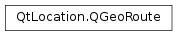

QGeoRoute¶
Synopsis¶
Functions¶
- def
__eq__(other) - def
__ne__(other) - def
bounds() - def
distance() - def
firstRouteSegment() - def
path() - def
request() - def
routeId() - def
setBounds(bounds) - def
setDistance(distance) - def
setFirstRouteSegment(routeSegment) - def
setPath(path) - def
setRequest(request) - def
setRouteId(id) - def
setTravelMode(mode) - def
setTravelTime(secs) - def
travelMode() - def
travelTime()
Detailed Description¶
The
PySide2.QtLocation.QGeoRouteclass represents a route between two points.A
PySide2.QtLocation.QGeoRouteobject contains high level information about a route, such as the length the route, the estimated travel time for the route, and enough information to render a basic image of the route on a map.The
PySide2.QtLocation.QGeoRouteobject also contains a list ofPySide2.QtLocation.QGeoRouteSegmentobjecs which describe subsections of the route in greater detail.Routing information is normally requested using
QGeoRoutingManager.calculateRoute(), which returns aPySide2.QtLocation.QGeoRouteReplyinstance. If the operation is completed successfully the routing information can be accessed withQGeoRouteReply.routes()See also
PySide2.QtLocation.QGeoRoutingManager
-
class
PySide2.QtLocation.QGeoRoute¶ -
class
PySide2.QtLocation.QGeoRoute(other) Parameters: other – PySide2.QtLocation.QGeoRouteConstructs a route object.
Constructs a route object from the contents of
other.
-
PySide2.QtLocation.QGeoRoute.bounds()¶ Return type: PySide2.QtPositioning.QGeoRectangleReturns a bounding box which encompasses the entire route.
-
PySide2.QtLocation.QGeoRoute.distance()¶ Return type: PySide2.QtCore.qrealReturns the distance covered by this route, in meters.
-
PySide2.QtLocation.QGeoRoute.firstRouteSegment()¶ Return type: PySide2.QtLocation.QGeoRouteSegmentReturns the first route segment in the route.
Will return an invalid route segment if there are no route segments associated with the route.
The remaining route segments can be accessed sequentially with
QGeoRouteSegment.nextRouteSegment.
-
PySide2.QtLocation.QGeoRoute.__ne__(other)¶ Parameters: other – PySide2.QtLocation.QGeoRouteReturn type: PySide2.QtCore.boolReturns whether this route and
otherare not equal.
-
PySide2.QtLocation.QGeoRoute.__eq__(other)¶ Parameters: other – PySide2.QtLocation.QGeoRouteReturn type: PySide2.QtCore.boolReturns whether this route and
otherare equal.
-
PySide2.QtLocation.QGeoRoute.path()¶ Return type: Returns the geometric shape of the route.
The coordinates should be listed in the order in which they would be traversed by someone traveling along this segment of the route.
-
PySide2.QtLocation.QGeoRoute.request()¶ Return type: PySide2.QtLocation.QGeoRouteRequestReturns the route request which describes the criteria used in the calculation of this route.
-
PySide2.QtLocation.QGeoRoute.routeId()¶ Return type: unicode Returns the identifier of this route.
Service providers which support the updating of routes commonly assign identifiers to routes. If this route did not come from such a service provider the function will return an empty string.
-
PySide2.QtLocation.QGeoRoute.setBounds(bounds)¶ Parameters: bounds – PySide2.QtPositioning.QGeoRectangleSets the bounding box which encompasses the entire route to
bounds.
-
PySide2.QtLocation.QGeoRoute.setDistance(distance)¶ Parameters: distance – PySide2.QtCore.qrealSets the distance covered by this route, in meters, to
distance.
-
PySide2.QtLocation.QGeoRoute.setFirstRouteSegment(routeSegment)¶ Parameters: routeSegment – PySide2.QtLocation.QGeoRouteSegmentSets the first route segment in the route to
routeSegment.
-
PySide2.QtLocation.QGeoRoute.setPath(path)¶ Parameters: path – Sets the geometric shape of the route to
path.The coordinates in
pathshould be listed in the order in which they would be traversed by someone traveling along this segment of the route.See also
-
PySide2.QtLocation.QGeoRoute.setRequest(request)¶ Parameters: request – PySide2.QtLocation.QGeoRouteRequestSets the route request which describes the criteria used in the calculcation of this route to
request.
-
PySide2.QtLocation.QGeoRoute.setRouteId(id)¶ Parameters: id – unicode Sets the identifier of this route to
id.Service providers which support the updating of routes commonly assign identifiers to routes. If this route came from such a service provider changing the identifier will probably cause route updates to stop working.
-
PySide2.QtLocation.QGeoRoute.setTravelMode(mode)¶ Parameters: mode – PySide2.QtLocation.QGeoRouteRequest.TravelModeSets the travel mode for this route to
mode.This should be one of the travel modes returned by
PySide2.QtLocation.QGeoRoute.request().travelModes().
-
PySide2.QtLocation.QGeoRoute.setTravelTime(secs)¶ Parameters: secs – PySide2.QtCore.intSets the estimated amount of time it will take to traverse this route, in seconds, to
secs.
-
PySide2.QtLocation.QGeoRoute.travelMode()¶ Return type: PySide2.QtLocation.QGeoRouteRequest.TravelModeReturns the travel mode for the this route.
This should be one of the travel modes returned by
PySide2.QtLocation.QGeoRoute.request().travelModes().
-
PySide2.QtLocation.QGeoRoute.travelTime()¶ Return type: PySide2.QtCore.intReturns the estimated amount of time it will take to traverse this route, in seconds.
© 2018 The Qt Company Ltd. Documentation contributions included herein are the copyrights of their respective owners. The documentation provided herein is licensed under the terms of the GNU Free Documentation License version 1.3 as published by the Free Software Foundation. Qt and respective logos are trademarks of The Qt Company Ltd. in Finland and/or other countries worldwide. All other trademarks are property of their respective owners.